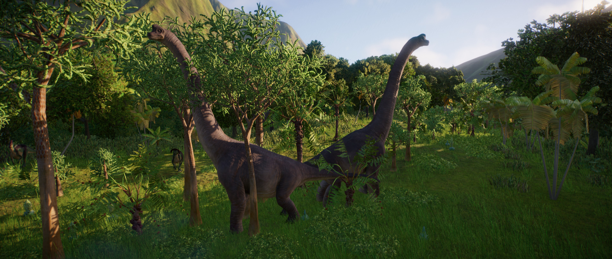

O Braquiossauro é um gênero de saurópode herbívoro e um dos maiores dinossauros que já existiram, pesando mais de 50 toneladas. Graças ao seu pescoço longo, ele pode se alimentar de folhas de árvores de até 12 m de altura, comendo até 400 kg de vegetação todos os dias, enquanto seu vasto tamanho significa que potenciais predadores tendem a se manter afastados.